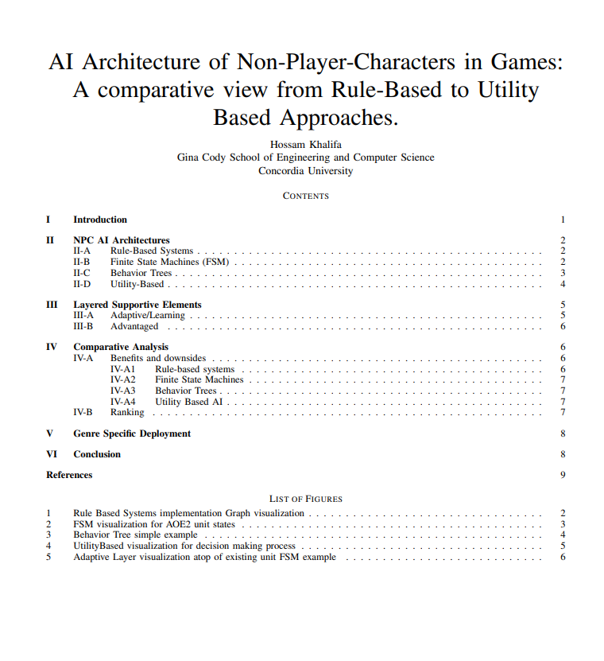
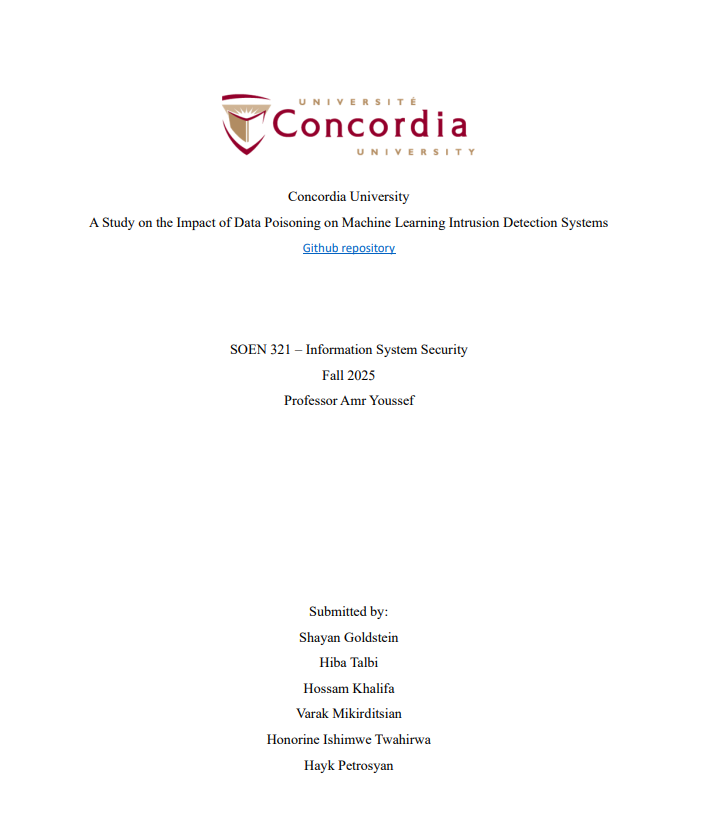
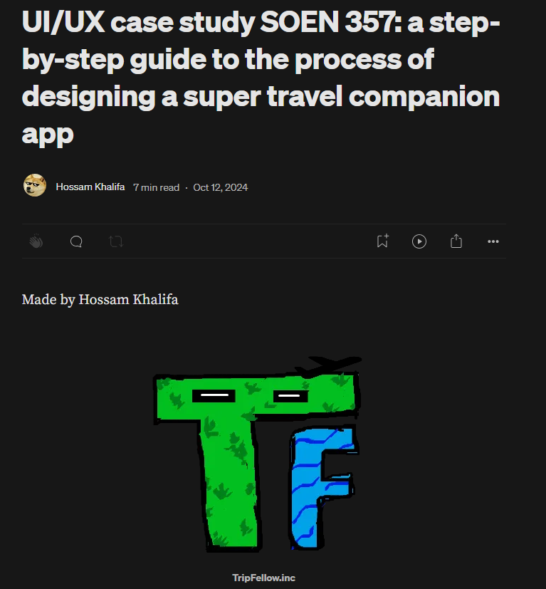
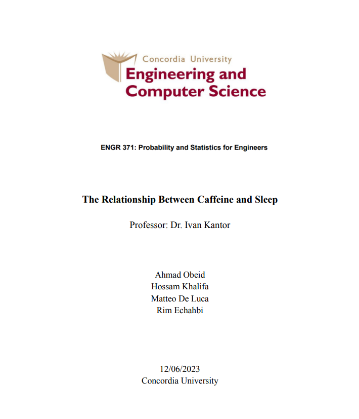

Reports
Research Papers, Technical Reports, Statistical Analysis, and written projects. PDFs available and some reports that belong to a project link back to it.

AI Architecture of Non-Player-Characters in Games
2026 · 11 pages
A stand alone technical report on the implementation of different AI architecutre of NPCs in games, providing a comparative view from Rule-Based Approaches to Utility Based Approaches.

Hand Gesture Recognition Using CNNs
2025 · 30 pages
Proposal, methodology and results from comparing 11 CNN models for hand gesture recognition.
Part of: CNN Hand Gesture Recognition Project
A Study on the Impact of Data Poisoning on Machine Learning Intrusion Detection Systems
2025 · 16 pages
A study of how data poisoning attacks affect the accuracy of machine learning intrusion detection systems.
Part of: Adversarial Attack on ML Project
OpenPomo Report
2024 · 7 pages
OpenPomo project report covering challenges, deployment, learnability metrics, and our decision process.
Part of: OpenPomo
UI/UX Case Study Report
2024 · 13 pages
A UI/UX case study walking through the step-by-step design process of a travel companion app.

The Relationship Between Caffeine and Sleep
2023 · 18 pages
A statistical analysis of how caffeine intake relates to sleep, using data collected from students and professors.